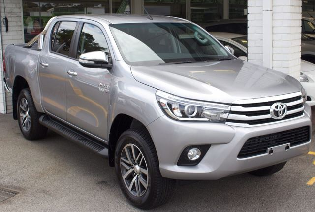
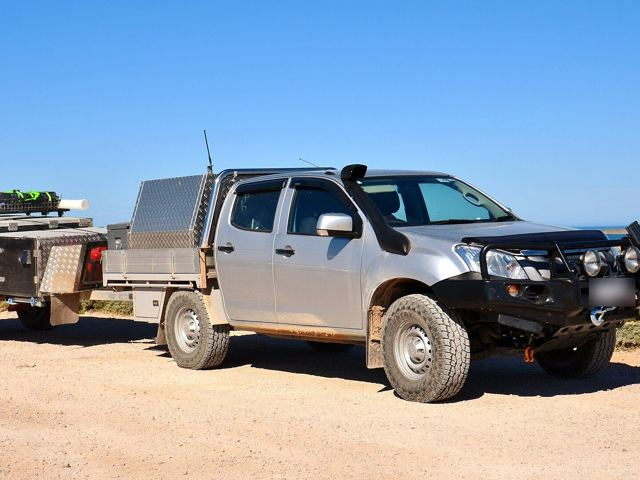
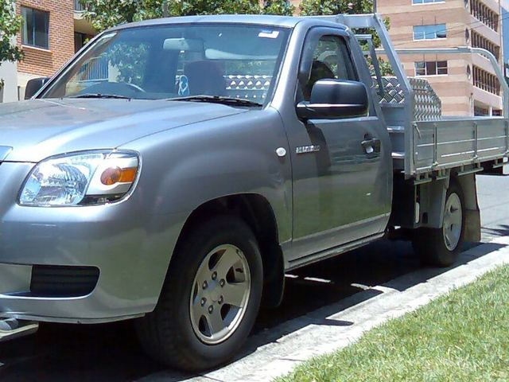
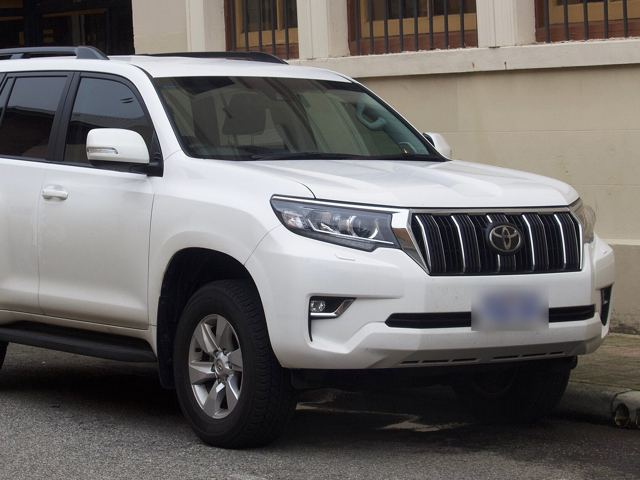
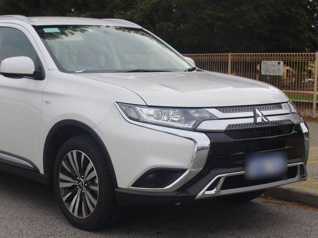
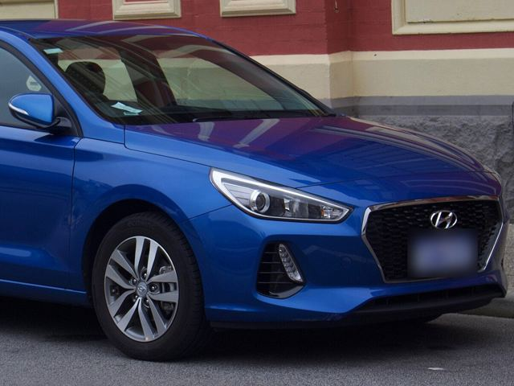
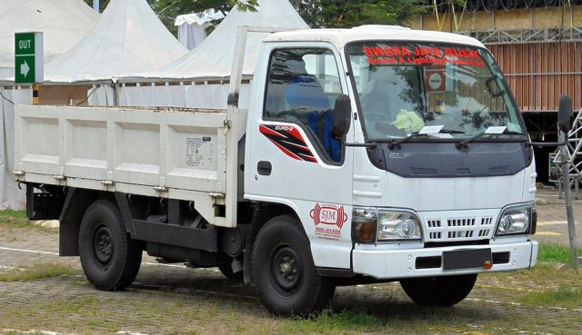
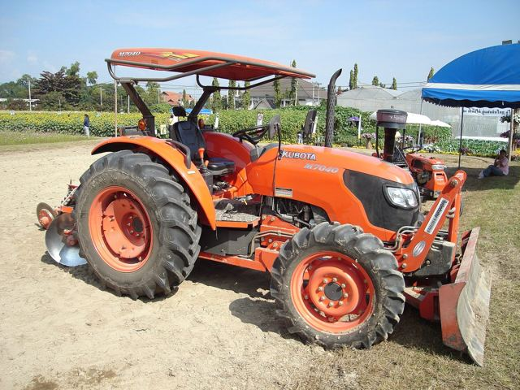
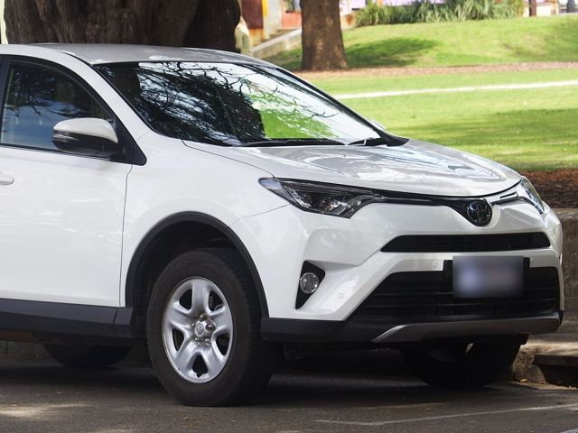

2019 Toyota HiLux SR5 Double Cab 4x4
$52,990$54,990Down $2,000
98,400 kmWarwick
- Diesel
- Automatic
- 4x4

Mallow Creek Motors sells used utes, 4x4s, family cars, light trucks and farm machinery from yards in Warwick and Toowoomba. Search the latest stock, then call or send an enquiry.
Or call (07) 5550 0317 · Mon to Fri 8am to 5pm · Sat 8am to 12pm
Price, kilometres and where it is, on every card. Tap Enquire to ask about one.
9 in stock

$52,990$54,990Down $2,000
98,400 kmWarwick

$54,990
61,200 kmToowoomba

$38,990
84,100 kmWarwick

$48,990$51,490Down $2,500
112,300 kmToowoomba

$34,990
29,800 kmWarwick

$23,990
54,000 kmWarwick

$38,500
142,000 kmWarwick

$29,900
3,150 hrsToowoomba

$41,990
47,500 kmToowoomba
Nothing matches that. or ask us.
Demo only: the business, vehicles and prices are made up. Photos are free-licence pictures of similar vehicles. Licensed motor dealer.
Photo credits (some cropped, number plates blurred): HiLux: EurovisionNim, CC BY-SA 4.0; D-MAX: Bahnfrend, CC BY-SA 4.0; Prado: EurovisionNim, CC BY-SA 4.0; Outlander: EurovisionNim, CC BY-SA 4.0; i30: EurovisionNim, CC BY-SA 4.0; Isuzu Elf light truck: オーバードライブ83, CC BY-SA 4.0; RAV4: EurovisionNim, CC BY-SA 4.0.
Move the sliders to see a rough weekly figure. Then ask us about your own options.
A rough guide only. Not a finance offer.
On a $38,000 price over 5 years at 9.5% a year (Example rate for this demo). No deposit, fees or balloon.
Tell us what you have and we will come back with an offer.
Mallow Creek Motors started in 2012 with one yard in Warwick. Today two yards sell used utes, 4x4s, cars, light trucks and farm machinery, and our own workshop looks over every vehicle before it goes on the lot.
Straight answers and no pressure. The price on the listing was the price we talked about.
They had our trade-in looked at the same day and explained the figure.
Easy to find the right tractor and the team knew the machine well.
Logbook servicing and repairs for the vehicle you bought here, or one you already own.
02Bull bars, tow bars, canopies and everyday parts, fitted at the yard.
03We can introduce you to lenders and explain your options before you decide.
04Our mechanics will check any vehicle on the yard with you, or you can bring your own inspector.
05Tell us what you have. We come back with an offer once we have seen it.
Warwick QLD
Mon to Fri 8am to 5pm · Sat 8am to 12pm
Toowoomba QLD
Mon to Fri 8am to 5pm · Sat 8am to 1pm
The price shown is what we are asking. Ask us what is included before you decide, such as registration and transfer costs.
Yes. Our mechanics can check it with you, or you can bring your own inspector.
Yes. Tell us about your vehicle using the trade-in form, and we will come back with an offer once we have seen it.
The weekly figure is a rough guide only, worked out at an example rate. It is not a finance offer. Ask us about your own options.
We have lowered the price. The listing shows what it was before and how much it came down.
Send us the details and we will call you back the same day.
_SR5_4-door_utility_(2015-10-18).jpg){kind=link}
.jpg){kind=link}
_GXL_wagon_(2018-08-06)_01.jpg){kind=link}
_ES_4WD_wagon_(2018-08-20)_01.jpg){kind=link}
_Active_5-door_hatchback_(2018-08-06)_01.jpg){kind=link}
.jpg){kind=link}
_GX_wagon_(2018-09-17)_01.jpg){kind=link}